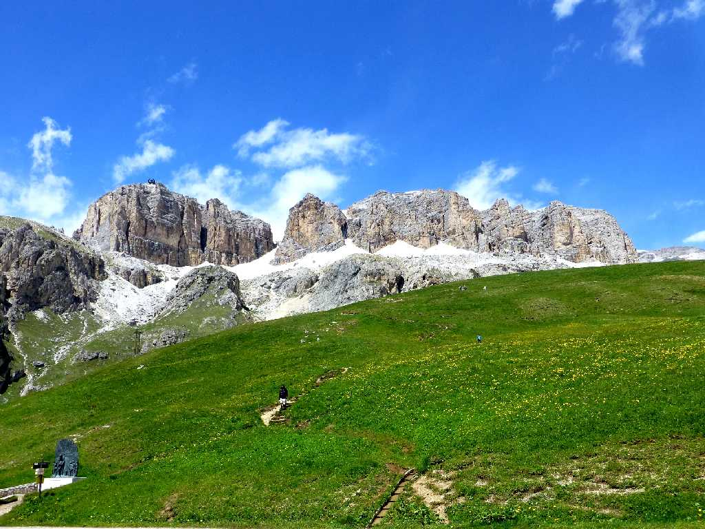
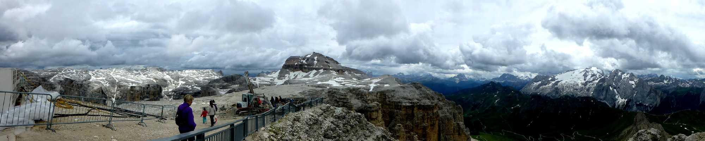
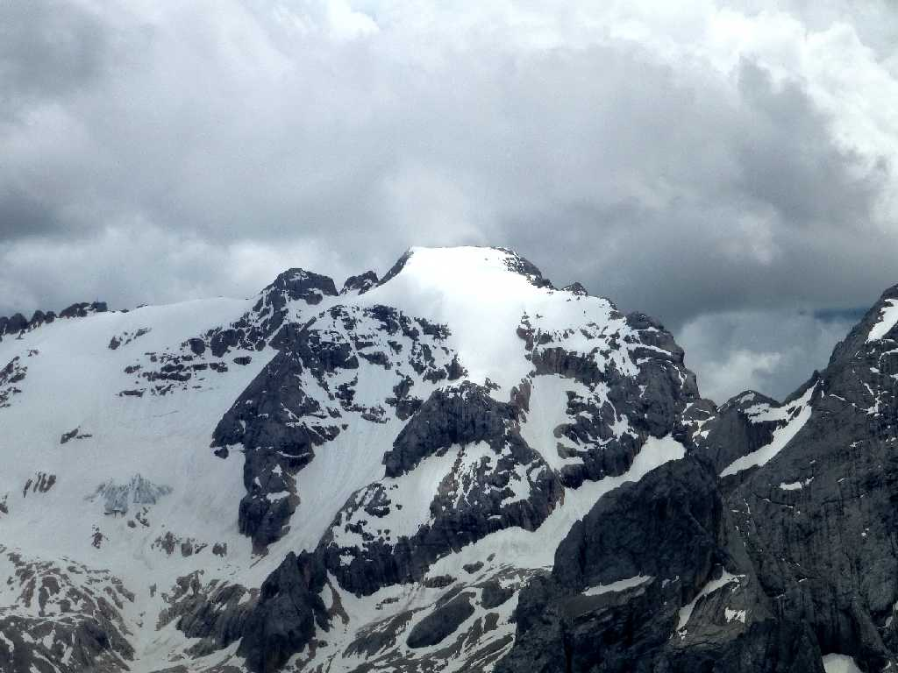
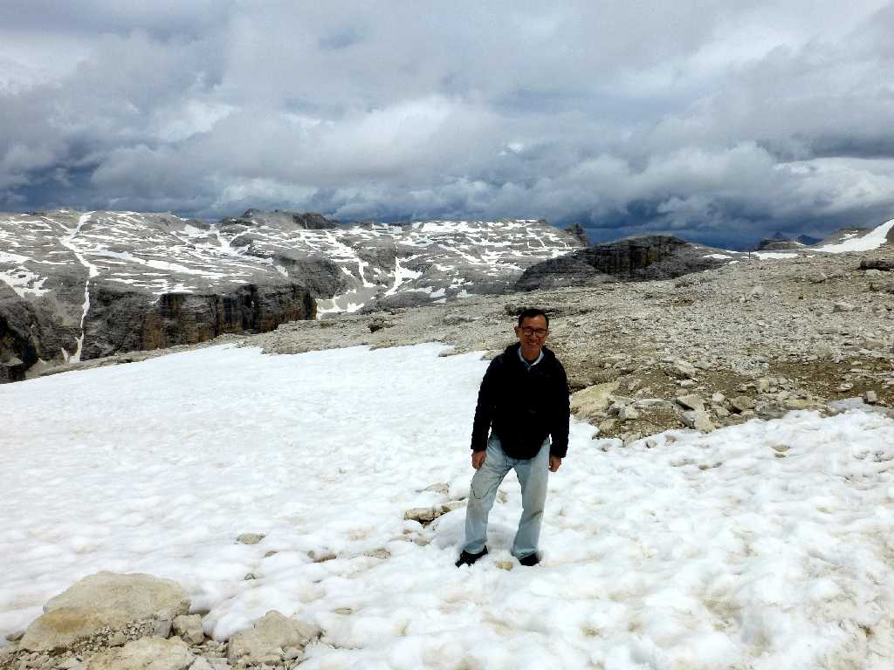

2,950m Sasso Pordoi 2,239m Passo Pordoi Dolomiti
ポルドイ山頂からロープウェイで峠に下山後昼食中は大雨になったが食後急速に晴天となった

3,343m Marmolada 2,950m Sasso Pordoi
ポルドイ山頂からの眺めで右にマルモラーダ山を望む

3,343m Marmolada La montagna più alta delle Dolomiti 2,950m Sasso Pordoi
南チロル地方ドロミテ山塊の最高峰マルモラーダ山

June 19 2015 Sasso Pordoi
残雪が残るポルドイ山頂